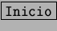
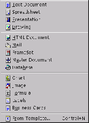
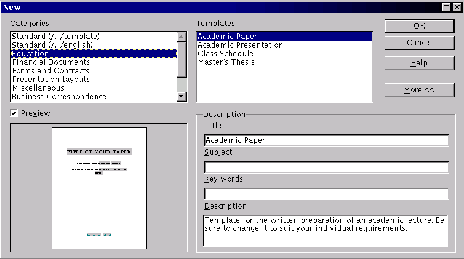

Next: Las ventanas de documento
Up: StarDesktop: El Entorno de
Previous: Aviso a la salida
Índice General
Se puede crear un documento nuevo desde varias partes del programa:
- Desde el desktop, haciendo doble pulsación sobre el tipo de archivo.
- Desde el menú .
- Desde al menú [Archivo], submenú [Nuevo]. Éste es el modo
desde el que se pueden ver todas las posibilidades. La figura
5.6 presenta el aspecto de este
submenú.
- Basándose en una plantilla ya hecha: se elige la opción
[A partir de una plantilla], lo que lleva al cuadro de diálogo
Nuevo, que se ve en la figura
5.7, en el que se elige
primero un área y luego una plantilla. StarOffice incorpora gran
cantidad de plantillas, lo que ahorra bastante trabajo, con la
contrapartida de que no se aprende mucho y los documentos resultan
poco originales.
Figura 5.6:
Menú de creación de un nuevo documento
|

|
Figura 5.7:
StarOffice permite el uso de plantillas
|

|
Next: Las ventanas de documento
Up: StarDesktop: El Entorno de
Previous: Aviso a la salida
Índice General
Proyecto Cursos - LuCAS - http://lucas.hispalinux.es/htmls/cursos.html